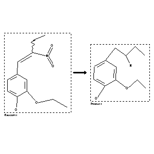

 |
| FA | RX(1); FLST(1); RX(1) |
Reaction (1 of 1)
| Reaction ID | 4310135 |
| Reactant BRN | 2564839 |
| Reactant | 2-Nitro-1-(4-hydroxy-3-ethoxy-phenyl)-buten-(1) |
| Product BRN | 2806362 |
| Product | 2-Amino-1-(4-hydroxy-3-aethoxy-phenyl)-butan |
| No. of Reaction Details | 1 |
Reaction Details (1 of 1)
| Reaction Classification | Preparation |
| Reagent | LiAlH4 |
| Solvent | diethyl ether |
| Citation Pointer | 103590; Journal; Profft,E.; Steinke,U.; APBDAJ; Arch.Pharm.Ber.Dtsch.Pharm.Ges.; GE; 297; 1964; 282-291; |
Reference (1 of 1)
| Citation Number | 103590 |
| Document Type | Journal |
| Authors | Profft,E.; Steinke,U. |
| CODEN | APBDAJ |
| Journal Title | Arch.Pharm.Ber.Dtsch.Pharm.Ges. |
| Language Code | GE |
| (Series) Volume | 297 |
| Publication Year | 1964 |
| Page | 282-291 |